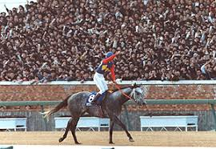
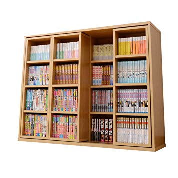
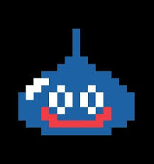

福ちゃんの取扱説明書
JRA競走馬
GO!
コミックス
GO!
STARWARS
GO!
ドラクエ
GO!
Pokémon
GO!
JRA（日本中央競馬会）のレースに出場する競争馬を独断と偏見から５頭紹介。

19年生きてきて読ませていただいた漫画作品から特に面白いと思った作品を５作品紹介。

STARWARSの魅力とおすすめ作品の紹介。
シリーズ全11作品から特に好きな５作品を紹介。また制作秘話などの裏話も。

発売から24年たった今でも愛され続けるポケモンの魅力と僕自身が好きなポケモンとその技構成をここだけの限定公開。